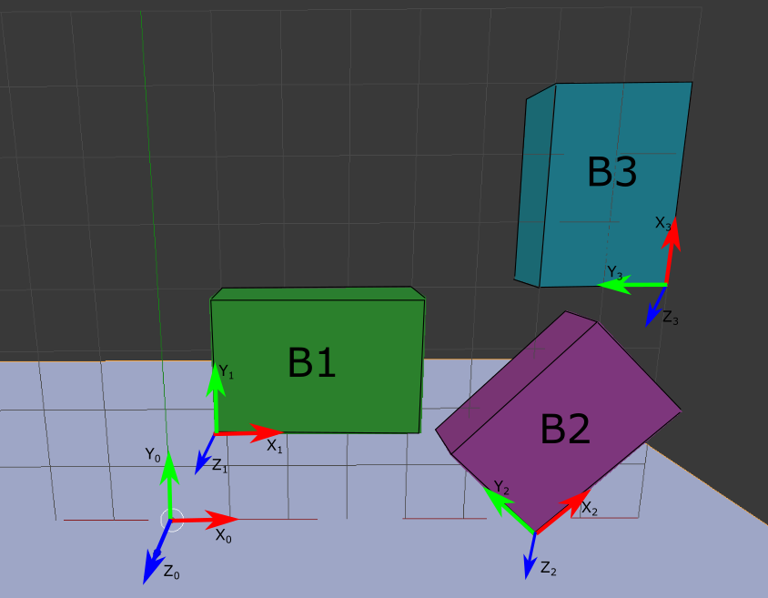
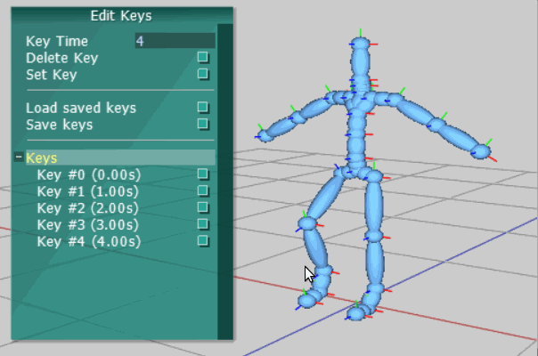

The goals of this lab are to
The motion assignment has been added to your AnimationFramework repository. To get the source, run
> cd cs56/AnimationToolkit > git pull
You should now have a new directory under assignments called a5-motion.
First, you will need to edit the CMakeLists.txt file under assignments to build the executables in the new directory, e.g.
add_subdirectory(viewer2d) add_subdirectory(viewer3d) add_subdirectory(a0-hello) add_subdirectory(a1-a2-rotations) add_subdirectory(a3-a4-curves) add_subdirectory(a5-motion) add_subdirectory(a6-keys)
Then, you can build and run like so
> cd AnimationFramework/build > cmake .. > make > ../bin/a6-keys
The basecode includes a simple interface and 3D viewer. See above for a demo.
The camera can be controled with the mouse:
The player control panel on the top left can be used to play/pause, step through keys, and see the simulation time.
The key control panel on the bottom left can be used to manage and preview keys.
The edit pose panel on the right allows you to edit the skeleton's pose. The reset button sets the root position and all joint rotations to a default T-pose. Selecting a joint from the list will highlight it on the character and allow you to change its local rotation.
For this exercise, we will work in groups of 2-3 people. In your readme for this week, please include the member names of the people you worked with!
A room has three boxes in it as shown below. Each box has a local coordinate system attached to it. The lengths of all three boxes in the x,y, and z directions of their local coordinate frames are (3,2,1) respectively. The origin of each box is in the lower left-hand corner. The z-axis of each box is aligned with the global Z axis.
The position of B1 with respect to the world (e.g. coordinate system {X0,Y0,Z0}) is p1 = [1 2 1]T.
The position of B2 with respect to the world is p2 = [6 0 0]T.
The position of B3 with respect to the world is p3 = [8 4 0]T.
Furthermore, with respect to the world coordinate system, B2 has been rotated 45 degrees around Z0 and B3 has been rotated 90 degrees around Z0.
It is desired to move B3 to the origin of the world coordinate system and neatly stack box B3 on top of B1.

Your assignment implements the scene above. To run
> ../bin/a6-boxes
Open the file AStackingBoxes.cpp. This simple program implements the scene shown above.
This is an individual assignment.
In class, we talked about two ways of handling the timing of keyframes for splines. The first spline type maintains a
list of keyframes that progress at a constant framerate. The animations based on motion capture
(see the BVH files in /motions for examples) use this format. Your basecode
implements a fixed framerate spline in the class AMotion and ASpline For this assignment, all the code you need to edit is in the dirrectory assignments/a6-keys
Implement the following functions in AKeySpline-basecode.cpp. You may use ASpline.h as a reference but be mindful that
your code needs to work with AKeyframe and support arbitrary timing! See the source for psuedocode for implementing each function.
(10 points) AKeySpline::applyPoseToSkeleton
(10 points) AKeySpline::getPoseFromSkeleton
(5 points) AKeySpline::getDuration
(5 points) AKeySpline::getNormalizedDuration
(5 points) AKeySpline::computeSegment
(5 points) AKeySpline::computeNormalizedTime
(10 points) AKeySpline::getValue
(5 points) Implement a simple march-in-place animation such as the following.
Make a video and save your keyframes to a new file marchkeyframes.txt and include it with your submission.
Option 1 (up to 2 each) Create a unique keyframed animation using the key editor
Option 2 (up to 2 each) Create a procedural animation.
Be sure to include a video of your demo for full credit!
Extra credits can be submitted after the due date!
AKeySpline
A simple animation

Extra Credit
Submission Guidelines (3 points)